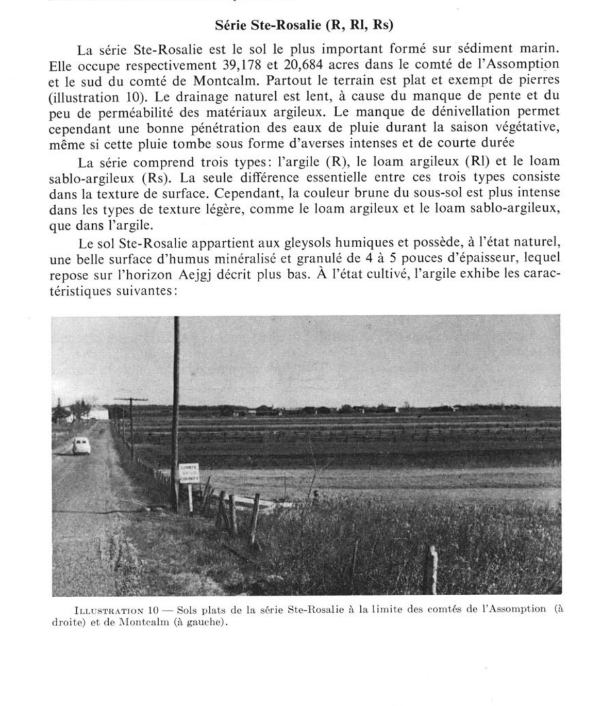

Identification & Caractéristiques Générales
La série de l'Assomption se développe sur des dépôts alluviaux récents à texture fine, mis en place par voie fluviatile dans les plaines basses et le long des vallées fluviales, notamment en bordure des rivières Ouareau et Assomption. Ces sédiments minéraux recouvrent généralement des formations deltaïques ou glaciolacustres sous-jacentes dans la basses-terres du Saint-Laurent. La topographie associée est de type ondulée à légèrement inclinée, avec des altitudes variant de 15 à 23 mètres (50 à 75 pieds). En situation de position topographique légèrement supérieure par rapport aux terrasses adjacentes de la série de Lachute, le profil géomorphologique de cette série présente une position favorable à l'égouttement latéral des eaux de surface.
Le profil morphologique se caractérise par un matériau dominant de texture loam limoneux à fine stratification, conférant au sol un drainage naturel modérément bon. La perméabilité est modérée dans le solum, permettant une infiltration verticale relativement aisée, bien qu'un ralentissement puisse être observé en profondeur selon la stratification des limons et des sables fins. La réaction du sol est généralement neutre à légèrement acide. La pierrosité fait défaut dans la matrice meuble du profil. La nappe phréatique perchée est temporaire et survient principalement lors de la fonte nivale ou de épisodes de fortes précipitations printanières, sans toutefois imprégner de façon permanente les horizons supérieurs.
Sur le plan agronomique, les sols de la série de l'Assomption présentent un potentiel productif élevé pour les grandes cultures, les cultures fourragères et certaines productions maraîchères intensives. Les limitations inhérentes à la mise en valeur agricole demeurent modérées, bien que l'installation d'un réseau de drainage souterrain (tuyauterie) soit souvent requise pour uniformiser l'assainissement printanier et maximiser la portabilité des équipements lourds. La gestion de la matière organique et le contrôle de l'érosion hydrique sur les pentes modérées constituent les principales exigences de régie pour préserver la structure limoneuse et la fertilité chimique de ces sols.
Classification Taxonomique & Environnement Pédologique
| Ordre Pédologique | Régosolique |
|---|---|
| Grand Groupe (SCSS) | Régosol orthique |
| Sous-Groupe Taxonomique | Régosol orthique |
| Famille Pédologique | Limoneuse-grossière, mixte sableux, acide |
| Mode de Dépôt Parental | Alluvion récente |
| Classe de Drainage Naturel | Modérément bien drainé |
| Régime Thermique & Humidité | Frais / Humide |
Description Morphologique du Profil Type
Séquences génétiques des horizons pédologiques caractérisant le profil type représentatif de la série L'Assomption :
Profil cultivé (agricole) — Comté de Joliette
✓ Source : Comté de Joliette — Page 76Couleur Munsell : 10YR 3/2
Structure & Consistance : Polyédrique à granulaire
Description morphologique : Loam limoneux, sans structure, brun gris très foncé (10YR 3/2), consistance friable. pH: 5.7.
Couleur Munsell : 2.5Y 4/4, 10YR 5/8
Structure & Consistance : Laminée
Description morphologique : Loam limoneux, structure laminée, olive (2.5Y 4/4) avec quelques taches de gley de couleur brun jaune (10YR 5/8), légèrement compact. pH: 5.9.
Couleur Munsell : 2.5Y 5/4, 10YR 5/6
Structure & Consistance : Laminée
Description morphologique : Loam sableux, structure laminée, olive clair (2.5Y 5/4), avec quelques taches de gley de couleur brun jaune (10YR 5/6), légèrement compact. pH: 6.2.
Profil cultivé (agricole) — Comté de L'assomption
✓ Source : Comté de L'assomption — Page 71Couleur Munsell : 10YR 4/3
Structure & Consistance : Grumeleuse
Description morphologique : Loam à loam limoneux brun foncé à brun grisâtre foncé (10YR 4/3-4/2); structure grumeleuse; très friable et très perméable; pH 5.1 à 6.0.
Couleur Munsell : 10YR 5/3
Structure & Consistance : En très fines plaques
Description morphologique : Loam à loam limoneux (parfois loam sableux très fin), brun à brun grisâtre ou brun jaunâtre foncé (10YR 5/3-5/2-4/4); structure en très fines plaques, lesquelles sont parfois entourées de sable fin, gris pâle; variations dans les couleurs dues principalement à des variations dans la nature des matériaux.
Couleur Munsell : 10YR 5/3 (matrice), 7.5YR 4/2 (marbrures)
Structure & Consistance : En lamelles faiblement apparente
Description morphologique : Loam à loam sableux très fin brun pâle à brun jaunâtre (10YR 5/3-5/4); faibles mouchetures de brun et de brun jaunâtre pâle (7.5YR 4/2-10YR 6/4); structure en lamelles faiblement apparente; perméable jusqu'à une profondeur d'environ 5 pieds de la surface et couches de sable et d'argiles moins perméables à plus grande profondeur; pH 5.8 à 6.5.
Profils Photographiques & Planches de Terrain
Documents iconographiques, figures pédologiques et coupes de terrain documentées dans les mémoires d'inventaire pour de la série L'Assomption :

Propriétés Physico-Chimiques & Analyses de Laboratoire
Données Analytiques de Laboratoire
Aucune analyse physico-chimique quantitative de laboratoire (granulométrie par sédimentométrie, pH H₂O/CaCl₂, matière organique Walkley-Black ou bases échangeables) n'a été consignée pour cette unité dans les archives historiques numérisées ou les bases contemporaines EESSAQ/MAPAQ.
Particularités Régionales, Phases & Variantes Pédologiques
Déclinaisons régionales, faciès texturaux, phases d'érosion ou de pierrosité et variantes cartographiées par étude pour de la série L'Assomption :
| Étude Régionale | Symbole | Appellation / Phase / Variante | Différenciation avec la série type (Analyse pédologique) |
|---|---|---|---|
| Comté de Joliette | Ap |
Assomption loam limoneux | Modalité modale de référence (type de base de la série). |
| Comté de L'assomption | As |
Assomption loam à loam limoneux | Conforme à la série type de référence (caractéristiques texturales et drainage identiques). |
Distribution Pédo-Paysagère & Représentativité Cartographique (Couverture PPS 2026)
- Mascouche loam limono-argileux (MAU) — co-occurrente dans 24 polygone(s)
- Zones ravinées (RRR) — co-occurrente dans 6 polygone(s)
- Coteau loam sableux très fin (CTU) — co-occurrente dans 3 polygone(s)
Aptitudes Agronomiques, Hydropédologie & Conservation des Sols
Indicateurs Hydropédologiques & Vulnérabilité à l'Érosion (BDHP 2026)
Interprétation BDHP : Potentiel de ruissellement modérément élevé. Faible taux d'infiltration, présence d'horizons ralentissant le drainage descendant.
Classement selon l'Inventaire des Terres du Canada (ITC / CLI) : Classe 1.
- Potentiel agricole : Terroir adapté aux cultures régionales selon la texture dominante et la régie de drainage.
- Contraintes majeures : Modérément bien drainé. Risque d'engorgement temporaire ou d'excès d'eau printanier.
- Gestion & Aménagement : Drainage souterrain ou superficiel préconisé sur les terres planes. Chaulage et apport organique régulier selon les bilans agronomiques.
- Cultures adaptées : Grandes cultures (maïs, soya, céréales), prairies fourragères et cultures maraîchères selon le contexte géomorphologique.